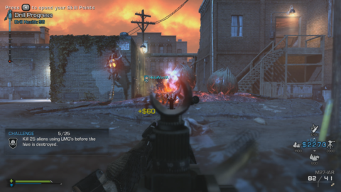

The first few minutes of Call of Duty: Ghosts don't paint a terribly accurate portrait of what lies ahead. You barely have time to take stock of the idyllic Southern California setting before fire begins raining down from the heavens, destroying every car and home in sight as a shouty man commands you to follow him to safety. But whereas Infinity Ward's recent work on the Modern Warfare series was weighed down by bewildering plot twists and an affinity for restricting its most exciting moments to noninteractive set dressing, Ghosts tells a lean, straightforward story that throws you into plenty of spectacular situations, but with more breathing room to appreciate the action. Along with the outstanding new Extinction co-op mode and an abundance of clever refinements to competitive multiplayer, Call of Duty: Ghosts is a refreshing and thoroughly satisfying entry in the blockbuster shooter franchise.
Much of Ghosts' success stems from its own sense of humility. Infinity Ward has done a great job reining in the excesses of previous Call of Duty campaigns, replacing the crumbling Eiffel Tower and runaway Tube trains of Modern Warfare 3 with a less heavy-handed approach that employs spectacle--and there's no shortage of that here--as more of a complement to its core combat. It's a game that avoids falling in love with its own cinematic ambitions, allowing the ruthless combat and well-paced encounters to take center stage over the plot.
Ghosts is full of atmospheric touches, like bubbles discharging from your gun when fired underwater.
It's a good thing, too, because the story is every bit a predictable tribute to American military might. After the collapse of the Middle Eastern oil economy, South America's oil-producing states join together to form an economic and military superpower known as the Federation. Naturally, the Federation decides to hijack a satellite weapon system and turn it against the United States. The conflict that follows is one centered on the Ghosts, an enigmatic tier one task force with a penchant for lethal efficiency and sweet skeleton masks.
The whole thing feels like a geopolitical Mad Lib, but a functional and rather harmless one. Ghosts deliversjust enough narrative to serve as a catalyst for its whirlwind tour through global warzones, while resisting the urge to club you over the head with plot twists and gratuitous shock-and-awe moments. In many ways, Infinity Ward has crafted a story that reflects the stoic nature of the Ghosts themselves: focused, efficient, and committed to the task at hand.
The approach pays off: Ghosts features a terrific collection of shootouts and set pieces, largely unburdened by the sensation that you're merely an extra in someone else's adventure. At various points you go after a missile launch center by tank and an offshore industrial facility by helicopter, each serving as excellent examples of how well Call of Duty's zippy and responsive controls can be applied toward massive, fully navigable battlefields. It's also a game with a knack for crafting tense shootouts in unexpected locales, highlighted by a brief jaunt into outer space that has you floating from one piece of debris to the next, aiming the shots that will make a Federation soldier's helmet decompress in a gruesome hiss.
Tank controls are unapologetically agile in Ghosts.
These bombastic set pieces are complemented by more subdued moments, like a deep-sea scuba mission that has you swimming through gorgeous reef formations while avoiding enemies both shark and human. Then there are the more tightly scripted scenes, like prowling through a dense jungle while using a motion tracker to spot enemies, or rappelling down the side of a Caracas skyscraper as you quietly snipe soldiers patrolling its interior. Moments like these further the game's excellent pacing, serving as welcome palette cleansers after some of the more spacious and chaotic battles.
It all adds up to a campaign that follows the familiar rhythms of the series, but in a more varied and generous way. There's a real willingness to let you stretch your legs and soak up the spectacle, driven by the feeling that--for the most part--you're the one at the center of the action.
There are some missteps. Using your pet dog to take out enemies serves as an entertaining staple of the game's early missions, but this gameplay mechanic completely disappears for the latter half of the campaign. Your AI squad mates still have a habit of occasionally running in front of your gunfire as thought you don't exist, and a few levels follow the bland corridor template a little too closely. But those issues aside, this is an impressive campaign that uses the series' winning formula as more of a roadmap than a shackle.
This is an impressive campaign that uses the series' winning formula as more of a roadmap than a shackle.
Ghosts is even more impressive on the next-gen hardware of the PlayStation 4. While the current-gen versions are just as competent as ever, rendering the chaotic shootouts at a smooth 60 frames per second, the PS4's next-gen artistry creates a much more immersive battleground. Those effects are most noticeable in the levels that emphasize lighting: the soft bokeh effects of floating embers on a burning oil refinery, or the way moonlight refracts and ripples while underwater. It's essentially the difference between a PC game running on high versus low settings. Each version is functionally the same, but all those extra effects add up to a more engrossing experience.
If Ghosts' story campaign is an example of its developers leaving Modern Warfare behind, its approach to co-op takes that trend one step further. Gone are the Spec Ops missions from Infinity Ward's previous work, replaced by a new co-op campaign dubbed Extinction. Much like Zombies in the Black Ops games, Extinction presents a playful alternate reality where you and up to three friends are dropped into a battle against fantastical enemies. But instead of shambling zombies, you're fighting a swarm of buglike aliens. The way these enemies scurry up the sides of buildings and burst forth from underground hives changes the dynamic in a monumental way: you're still employing Call of Duty's signature shooting mechanics, but you're doing so against an enemy whose animalistic movement makes it much more imposing and unpredictable than your average foot soldier.

Extinction's various progression systems make for a steep learning curve, but boy is it fun.
Extinction is an ambitious hybrid of tower defense,Left 4 Dead, and Borderlands. You're drilling into alien hives as you move through the backwoods and small-town streets of rural America, each drill site its own standoff against swarms of incoming enemies who grow larger and nastier as the campaign progresses. There's a class system that allows you to play complementary roles, an in-game skill tree that lets you beef up your character on the fly, and a scavenging system where taking the time to rummage through a dumpster might reward you with a new weapon sight. There's also an economy that encourages fun twists on teamwork, like the ability to pool your money together to unlock a helicopter strike when things get really tough.
None of these ideas are remarkable on their own, but the way Extinction blends them with Call of Duty's fast-paced action is tremendous fun. Throwing a hypno knife at an acid-flinging scorpion to turn it into a friendly, debating whether to buy a turret gun for yourself or a crate of incendiary ammo for your team--Extinction is full of all these little moments and decisions that add up to a stellar co-op experience. This is Call of Duty venturing as far outside its comfort zone as it ever has, but the payoff is immense.
A more familiar experience can be found in Ghosts' competitive multiplayer. The frantic pacing and close-quarters encounters are every bit as enjoyable as they've ever been, augmented by contextual lean and running slide abilities that make for more fluid transitions in and out of cover. Infinity Ward has taken a delicate approach to the existing multiplayer progression, though a new perk weighting system promotes better player balance while still giving you plenty of ways to micromanage your loadouts.
One of the features that Ghosts introduces to multiplayer is a character customization system that takes those abstract player levels and wraps a greater sense of ownership around them. You can now create a roster of personalized soldiers, each decked out in a wardrobe full of custom armor and equipment. Facial designs, skin color, and gender are all options you can use to craft your own characters, and then you take those creations one step further by leveling them all up independently of one another. For a series that has long given you such granular control over your weapons and abilities, it's nice to finally be able to apply that same level of personalization to the characters themselves.
Multiplayer maps have you fighting everywhere from Scottish castles to Alaskan fishing villages.
That customization system is what drives the new Squads mode, a feature that pushes Call of Duty eerily close to the realm of management sim. Squads is where you take your custom characters and turn them into a full-blown team of AI soldiers, leading your creations in competitive matches against teams designed by your friends--even if those friends happen to be offline. It essentially spreads the rewards of repeated prestiging out across different soldiers, giving dedicated players a new kind of progression for the countless hours they will spend leveling up. Squads is clearly a feature designed for the most hardcore Call of Duty players, but it's also a testament to just how deep the well of competitive experiences has become.
Yet Squads is hardly the only addition to Call of Duty's competitive landscape. Ghosts introduces a number of clever multiplayer modes that keep a keen eye on the series' strengths while taking a playful approach to how you can interact with one another. Blitz is like a twist on American football: players dash toward scoring zones on the other team's side of the map, warping right back to safety if they're successful and becoming sitting ducks if they fail to properly judge the scoring cooldown timer. Hunted takes a Hunger Games approach to multiplayer design, giving players one handgun and 10 bullets to start and forcing them to fight over randomized weapon drops that fall from the sky. And then there's Grind, an evolution of Kill Confirmed that makes players take the dog tags dropped by fallen enemies and run them back to a handful of specific locations in order to bank points. Each of these game modes adds a devilish new wrinkle to the multiplayer experience, taking an already exceptional collection of competitive options and expanding them further.
From an exuberant campaign full of spectacle and variety to the way Extinction's unpredictable aliens force you to use those targeting skills in entirely new ways, Ghosts strikes an excellent balance between the familiar and the novel. This is a game that's keenly aware of the series' strengths, but doesn't find itself beholden to them. No matter what standard you apply, Call of Duty: Ghosts is a terrific first-person shooter.